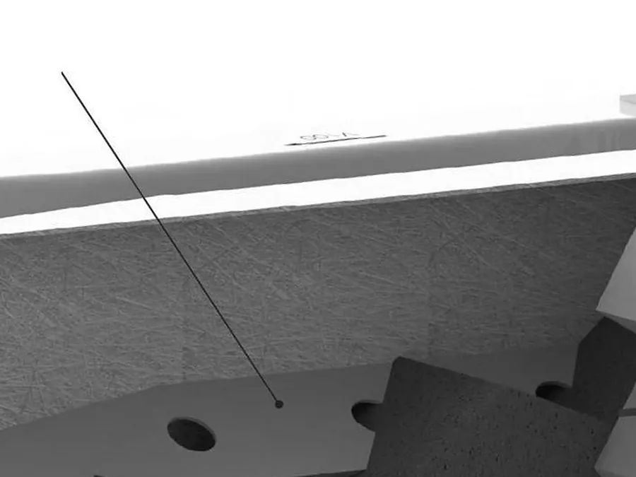

Débitmètres · Canal de comptage
Canal Venturi AMVCanal de mesure Venturi conforme ISO 4359
Le canal de comptage préfabriqué pour la mesure de débit en surface libre. Conforme à la norme ISO 4359, en résine polyester renforcée, il devient une mesure de débit continue, fiable et précise, associé à un capteur de niveau.
- Norme
- ISO 4359
- Débit maximal
- 6,8 à 3 317 m³/h
- Précision
- 1 % entre Qmin et Qnom
- Modèles
- AMV 6 à AMV 3000
Idéal pour
- Stations d’épuration
- Autosurveillance
- Effluents chargés
- Liquides corrosifs
- Industrie
LeasingDisponible à l’achat ou en leasing, par mensualités. Comment ça marche
Points forts
Un canal stable dans le temps : la précision de mesure dépend d’abord de la géométrie du canal.
- Conforme ISO 4359Géométrie, rayons de courbure à l’entrée du col et limites d’application respectés.
- Renfort brevetéRenfort latéral de type oméga : rigidité et accroche au béton, sans déformation au coulage.
- Courbe Q(h) fournieAvec chaque canal, pour programmer le débitmètre.
- Faibles débitsUn seuil au fond du canal permet la mesure des petits débits.
- Liquides chargés ou corrosifsRésine polyester multicouche, gel-coat de qualité marine.
- Gamme complèteNeuf modèles, du AMV 6 au AMV 3000.
Principe de mesure
Le canal Venturi rétrécit latéralement l’écoulement. Au droit du col, l’eau passe d’un régime fluvial à un régime torrentiel : la hauteur d’eau mesurée en amont du rétrécissement suffit alors à calculer le débit.
La conversion de la hauteur en débit suit une formule propre à chaque taille de canal, fournie avec lui. Un capteur de niveau à ultrasons ou bulle à bulle et un débitmètre complètent le point de mesure.
- Longueur droite d’approche de 10 fois la largeur du canal
- Canal de mesure avec puits et échelle graduée en option
- Canal d’approche aux mêmes dimensions en option
Applications
Pour la mesure de débit en canal ouvert, sur liquides clairs, chargés ou corrosifs.
- Stations d’épurationComptage en entrée et en sortie, points d’autosurveillance.
- AssainissementMesure en surface libre sur les ouvrages accessibles.
- IndustrieEffluents chargés en particules solides ou corrosifs.
- Traitement des eauxMesure de débit continue en canal ouvert.
Caractéristiques
Valeurs par modèle d’après la documentation ; dimensions complètes dans le PDF.
| Matériau | Résine polyester, 3 à 6 couches selon le modèle |
|---|---|
| Finition | Gel-coat de qualité marine, première couche anti-osmose |
| Renforts | Omégas stratifiés avec prise béton : 1 renfort (AMV 6 à 200), 2 renforts (AMV 300 à 3000) |
| Géométrie | ISO 4359, sauf AMV 6 et 15 |
| Couleur | RAL 7031 |
| Débordement | Marge de 20 mm au-dessus de Qmax |
| AMV 6 | 1,89 l/s · 6,79 m³/h |
|---|---|
| AMV 15 | 5,84 l/s · 21 m³/h |
| AMV 40 | 18 l/s · 65 m³/h |
| AMV 100 | 34 l/s · 123 m³/h |
| AMV 200 | 76 l/s · 273 m³/h |
| AMV 300 | 112 l/s · 402 m³/h |
| AMV 600 | 230 l/s · 829 m³/h |
| AMV 1000 | 376 l/s · 1 355 m³/h |
| AMV 3000 | 921 l/s · 3 317 m³/h |
| De 0 à Qmin | 3 à 1 % |
|---|---|
| De Qmin à Qnom | 1 % |
| De Qnom à Qmax | 1,2 % |
Téléchargements
Questions fréquentes
Les questions que nous posent le plus souvent les exploitants et les bureaux d’études.
Quelle longueur droite prévoir en amont ?
Une longueur d’approche droite de 10 fois la largeur du canal. Elle peut être maçonnée ou réalisée avec les canaux de mesure et d’approche proposés en option.
Avec quel débitmètre l’équiper ?
Avec un débitmètre à ultrasons comme l’OC90 ou un débitmètre bulle à bulle comme le DEBULLE ou le BUL’R2, programmé avec la courbe Q(h) fournie.
Comment choisir la taille du canal ?
Selon les débits minimal, nominal et maximal du point de mesure. Votre interlocuteur vous aide à choisir le modèle adapté.
Pourquoi un renfort oméga ?
La principale cause d’imprécision est la déformation du canal lors du coulage du béton. Le renfort breveté assure sa rigidité et une meilleure accroche au béton.